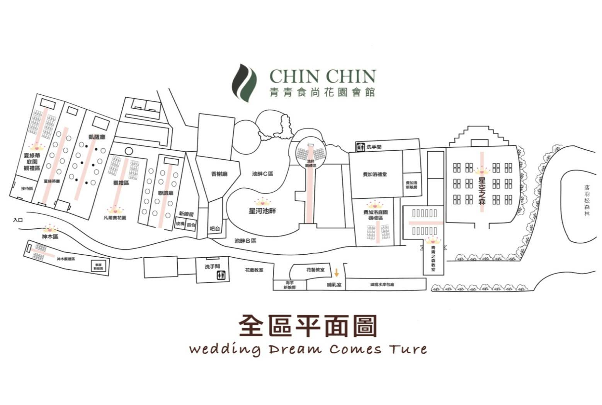

Our story
在迂迴的路上，遇見彼此
「如果妳的內心是一座孤島， 那我的便是崎嶇的山谷。 我們都歷經了跋山涉水， 才抵達彼此身邊，並選擇留下。」
— 願把這份餘生，慢慢走成一輩子的樣子。
Our story
「如果妳的內心是一座孤島， 那我的便是崎嶇的山谷。 我們都歷經了跋山涉水， 才抵達彼此身邊，並選擇留下。」
— 願把這份餘生，慢慢走成一輩子的樣子。
The celebration
2026 / 12 / 20 ・ 星期日
證婚儀式入席
證婚地點｜落羽松森林
報到資訊｜請至法頌廳入口處禮金桌
午宴入座 & 茶會
午宴地點｜法頌廳
報到資訊｜請至法頌廳入口處禮金桌

期待與您共享冬日午後的美好時光
Getting there
青青食尚花園會館・法頌廳
台北市士林區至善路二段 266 巷 32 號
搭乘捷運淡水線至士林捷運站一號出口，轉乘公車 255、304、小型公車 18、小型公車 19，至故宮博物院站下車。
乘車處：劍南路捷運站一號出口，直行至北安路交叉口。
午宴接駁時間：10:30 – 12:30
請預留交通時間，期待與您在現場相見。
With love
這一路走來不容易， 幸好有身邊每一位親愛的朋友一路相伴。 誠摯邀請大家在 12 月 20 日的冬日陽光下， 與我們一同見證、一同歡笑，分享我們的幸福。
劉家瑄 & 徐文倩 敬邀
SUNDAY · 12.20.2026